크리에이터리에서 크리에이터에겐 데이터 분석과, 캠페인 광고 관리
광고주에겐 마케팅 솔루션과 성과분석 리포트를 제공하는 비즈니스
모델을 가지고 있습니다.
크리에이터리의 고충
크리에이터리에서는 캠페인 관리 플로우에대해서 개선을 필요하다고
생각하고 있었습니다.
광고 캠페인을 협의하는 과정속에서 플로우가 어렵다는 유저의 피드백이
있었고
광고주와 크리에이터의 캠페인 과정을 매끄럽게 진행되는 것을 프로젝트
목표로 생각하고 있었습니다.
크리에이터리와 사용자의 포지션
현재 크리에이터리는 서비스내에서 사용자에게 어떤 가치를 제공하고
있는지
Value Proposition Canvas(가치제안캔버스)를 통해 크리에이터의
페인 포인트와 게인 포인트를 도출해냈습니다.
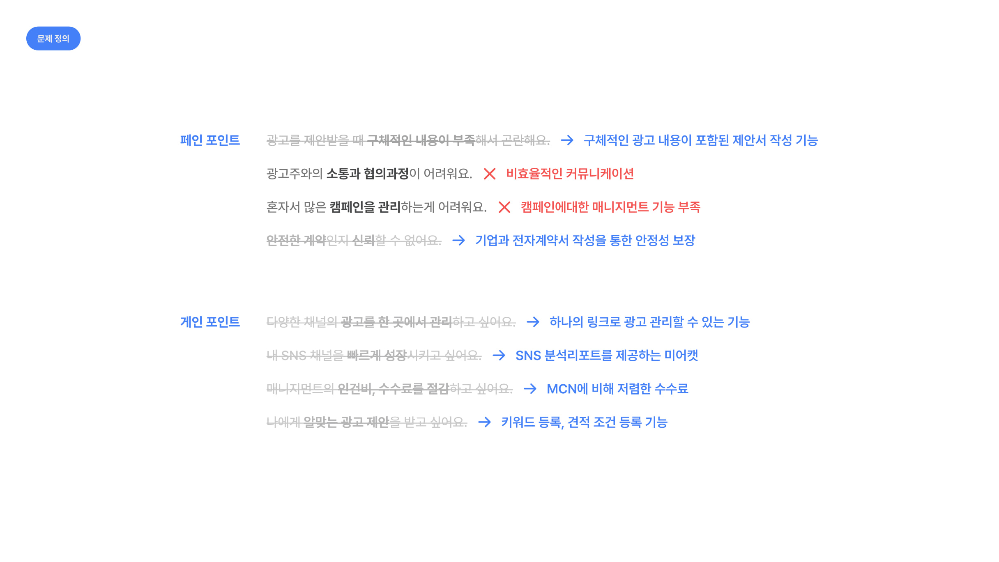
충족되지 않는 니즈
분석된 니즈에서 크리에이터리에서 제공하는 서비스중 해소되는 니즈와
그렇지 않는 니즈를 분석하였습니다.
서비스에서 커뮤니케이션에대한 불편함과 혼자서 캠페인을 진행할때 일정
누락과 많은 캠페인을 관리할때에 도움을 주는 부분이 부족하다고
분석했습니다.
핵심적인 개선 단계 설정과 유저 리서치 준비
가치제안캔버스를 통해 도출한 유저의 과업 중에서 캠페인을 진행할때
핵심 과업을 진행과정을 핵심 유저 여정(Critical User Journey)을
통해
분석하였습니다. 이를 통해 핵심 개선 영역 설정하고 선택 - 협의 - 진행
단계의 불편한 점을 개선을 위해 설문지를 작성하여 정량 조사를
진행하였습니다.
일정에 대한 염려와 내용파악에 대한 어려움
크리에이터리 유저들은 광고 진행시 일정관리에 어려움을 겪고 있었고
응답 내용으로는 광고 정보를 한눈에 보기 어려움과 일정이 많을 때
놓치는 부분에 대한 염려가 있었습니다.
광고 효율적으로 관리하고 싶어하는 니즈를 발견할 수 있었습니다.
협의단계의 불편한 커뮤니케이션
크리에이터는 광고주와 협의단계에서 어려움을 느끼고 있었습니다.
유연하지 못한 일정 협의, 예민한 단가에대한 협의, 요구사항을
파악하고
적용하는 어렵다는 유저의 피드백이 있었습니다.
전체적인 커뮤니케이션에서 어려움을 겪고 있는 점을 파악할 수
있었습니다.
매니징과 커뮤니케이션을 도와줄 수 있는 개선 아이디어
해결방안을 토대로 발견된 문제를 해결할 수 있는 기능등을
정리했습니다.
실제로 서비스에 반영할 수 있는 수준의 기능들 위주로 반영하였습니다.
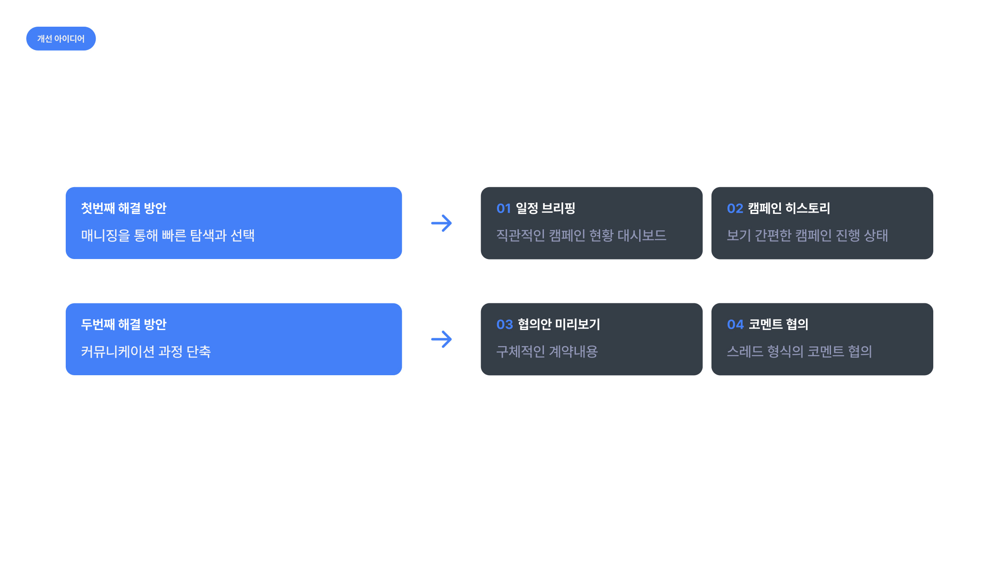
인사이트를 통한 개선 방안
종합한 인사이트를 통해 크리에이터 혼자서도 광고 일정을
무리없이 소화할 수 있도록 매니징 역할을 강화할 필요가 있다고
생각했습니다.
그리고 협의과정에서 불필요한 커뮤니케이션 비용을 줄이자는 해결방안을
방향성을 잡았습니다.
일정 누락을 방지해주고 관리를 도와주는 일정 브리핑
신규 제안, 계약서 작성, 기획안 작성 3가지 주요 진행 현황을
빠르게 파악할 수 있도록 브리핑 대시보드 영역을 구성했습니다.
실시간으로 활동 내역을 알려줄 수 있도록 알림 기능을 상단에
제공합니다.
상태 별로 정의한 컬러를 함께 명시하여, 정보 인지를 돕고자 했습니다.
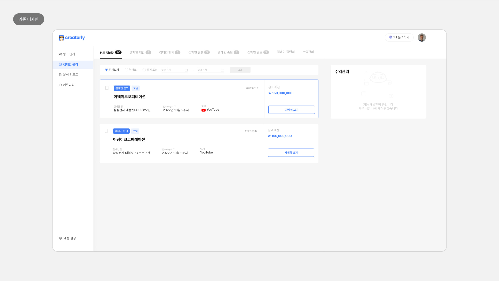
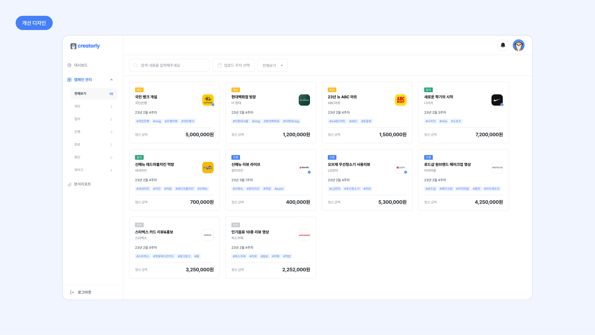
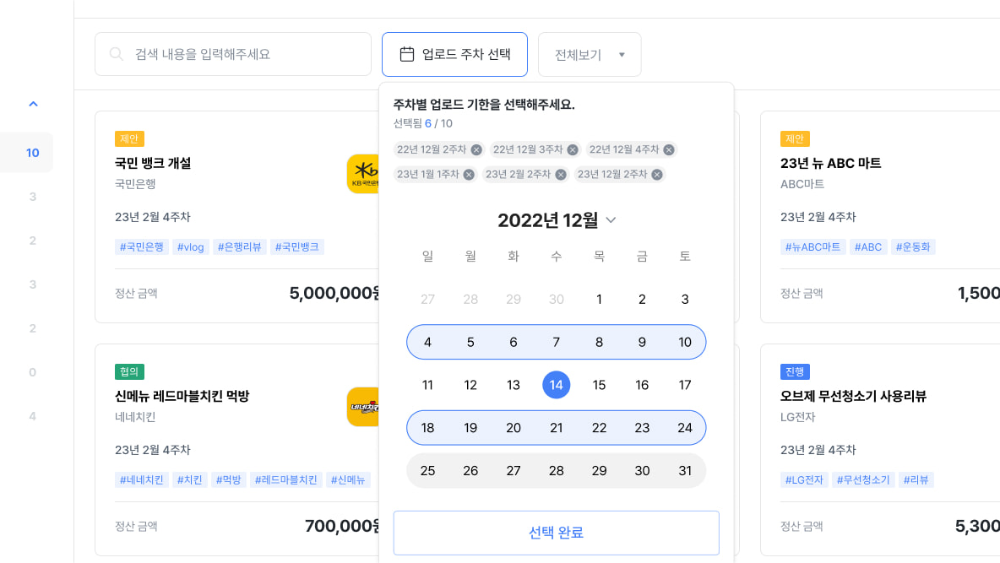
캠페인 탐색을 도와주는 필터
탐색 영역에서 정렬과 필터 기능을 제공하여 캠페인을 더욱 효율적으로
찾도록 도와줬습니다.
제안받은 캠페인과 동일한 단위인 주단위를 통한 캘린더 뷰 탐색이
가능하도록 제작하였습니다.
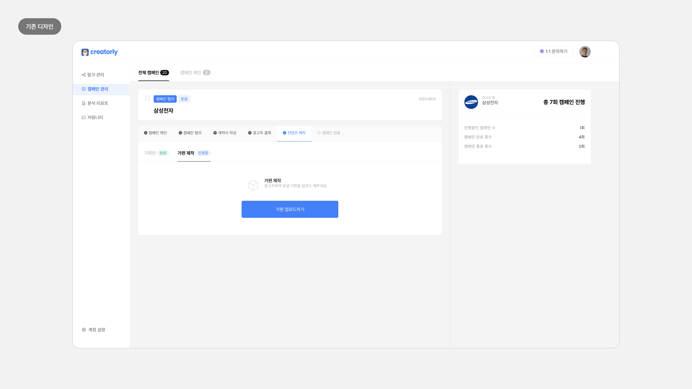
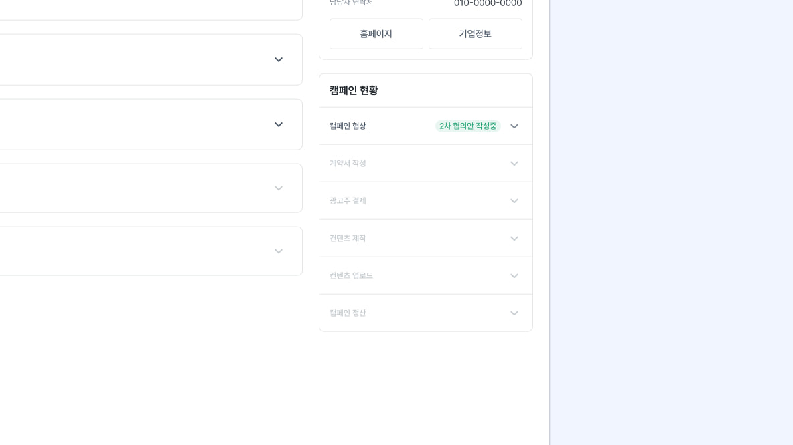
프로세스 시각화
크리에이터리의 유저들이 캠페인 플로우를 이해하는 것과 캠페인
별로 무엇을 수행해야하는지 확인할 수 있도록 구성하였습니다.
캠페인 현황 히스토리영역에서는 전체적인 프로세스 단계와
간결한 진행상황을 파악할 수 있도록 구성하였습니다.
불필요한 협의과정을 줄이기위한 위한 미리보기
협의 과정에서 전체적인 협의 내용을 간결하게 확인할 수 있도록
우측에 협의안 미리보기를 배치하여,협의 내용 작성중 혼란을 최소화하여
불필요한 커뮤니케이션을 최소화하기위해 구성하였습니다.
변경된 내용은 미리보기에서 표시되어 전체적인 변경 흐름을 파악할 수
있도록 구성하였습니다.
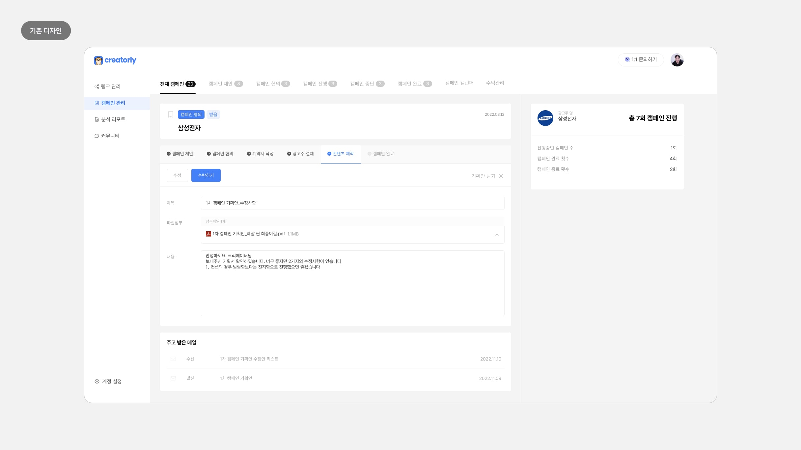
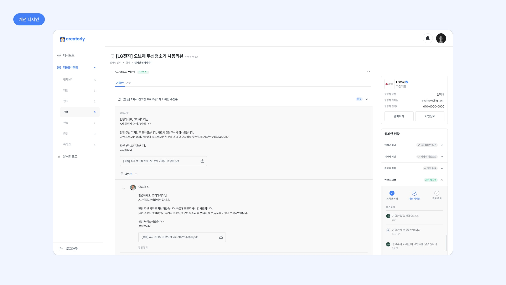
작업과 커뮤니케이션이 동시에 가능한 협의
기존 리스트 형식으로 제공하던 기획안 협의 내역을 스레드 형태로
개선하여,
한 공간에서 협의안을 주고받을 수 있도록 하였습니다.
 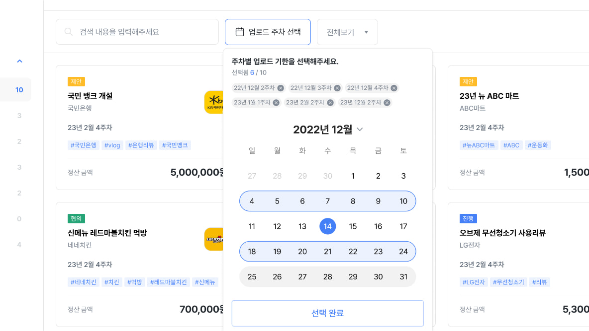
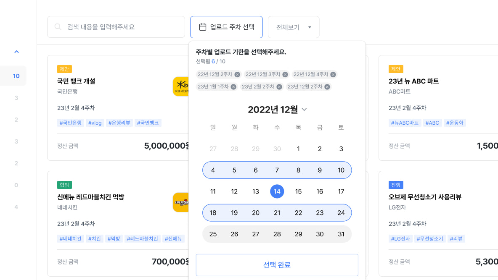